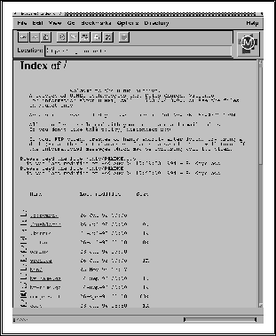

I likhet med for News og elektronisk post, finnes det også her et dryss
av programmer for å bruke FTP. Eksempelet i figur  viser det
vanlige FTP programmet på en UNIX maskin, men for f.eks. en Macintosh
eller Windows maskin finnes det FTP programmer med grafisk grensesnitt
slik at man kan klikke seg fram og tilbake i arkivet etter at man er oppkoplet.
viser det
vanlige FTP programmet på en UNIX maskin, men for f.eks. en Macintosh
eller Windows maskin finnes det FTP programmer med grafisk grensesnitt
slik at man kan klikke seg fram og tilbake i arkivet etter at man er oppkoplet.
Med inntoget av World Wide Web rammeverket (se avsnitt ) er det også
mange som foretrekker å bruke WWW programmer for å gjøre FTP. Dette ser vi
et eksempel på i figur , dedr vi er koplet opp mot det samme
arkivet som i figur .